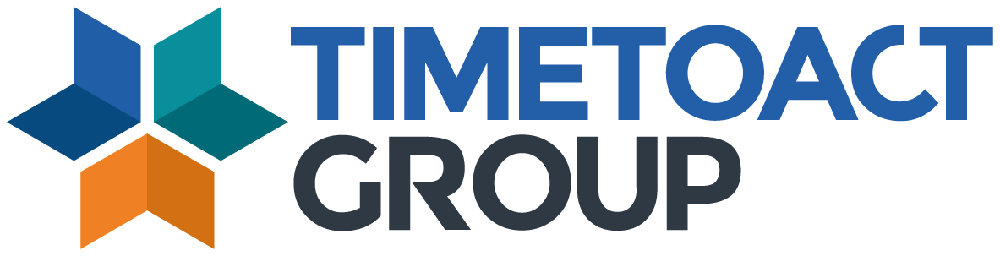
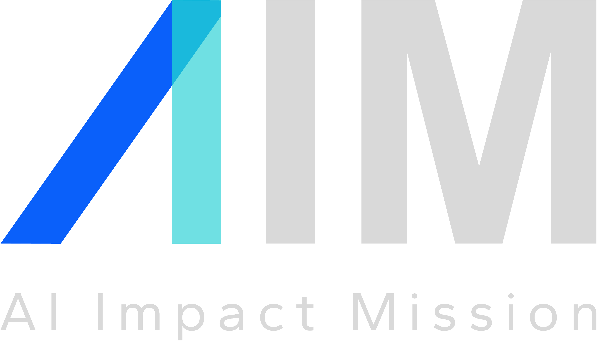

Overview
The Challenge
Built at the AIM Hackathon 2024 in Vienna — a one-day competition organized with TIMETOACT GROUP Austria — the challenge was to make sense of corporate ESG (Environmental, Social, Governance) data at scale. Companies publish sustainability reports as dense, unstructured PDFs. Extracting comparable, structured scores across hundreds of them manually is infeasible.
The dataset comprised 146 corporate sustainability reports spanning multiple years and companies — including Austrian firms, global corporations, and reports in multiple languages. The goal: build a pipeline that could answer structured ESG questions over any of these documents reliably and within a constrained API budget.
The Solution
We built a RAG (Retrieval-Augmented Generation) pipeline on top of GPT-4o that ingests raw PDF sustainability reports, indexes them semantically, and answers structured ESG queries with forced output formats — enabling consistent cross-company comparison at scale.
-
01.
Ingestion: PDF reports are parsed and split into chunks, then embedded and indexed with FAISS for fast semantic retrieval.
-
02.
Retrieval: Relevant passages are retrieved per query using vector similarity search, keeping only the most informative context within the token budget monitored via tiktoken.
-
03.
Generation: GPT-4o answers ESG queries using Structured Outputs to enforce typed responses — scores, ratings, and comparisons returned as clean, parseable data rather than free text.
Result
AIM Hackathon 2024 · Vienna
Tech Stack
My Role
- Pipeline Architecture
- LLM Integration
- Data Engineering
In Collaboration With

TIMETOACT Group
AIM — AI Impact Mission